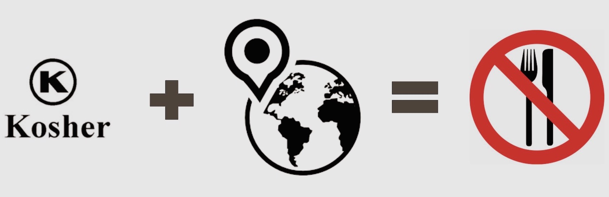
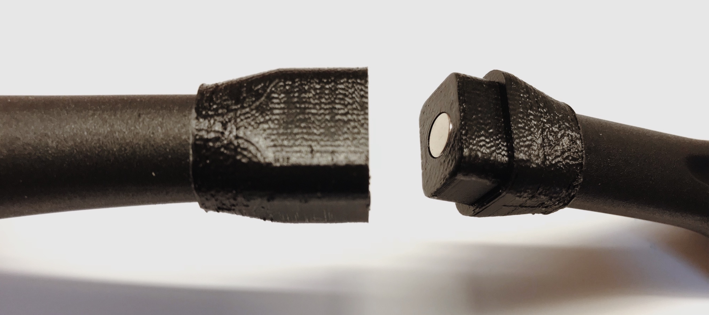
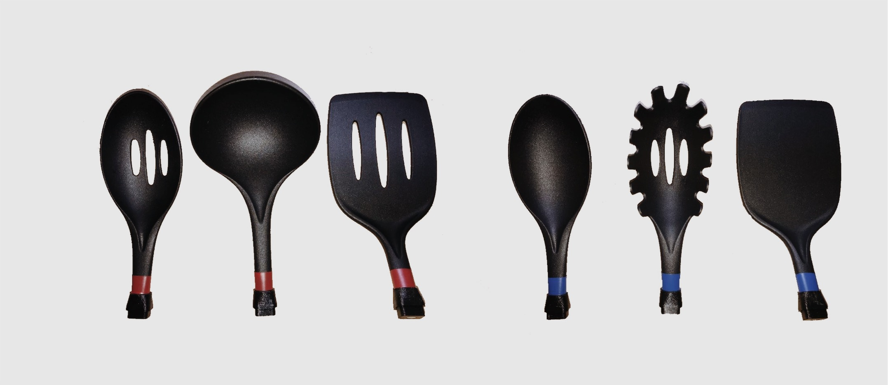
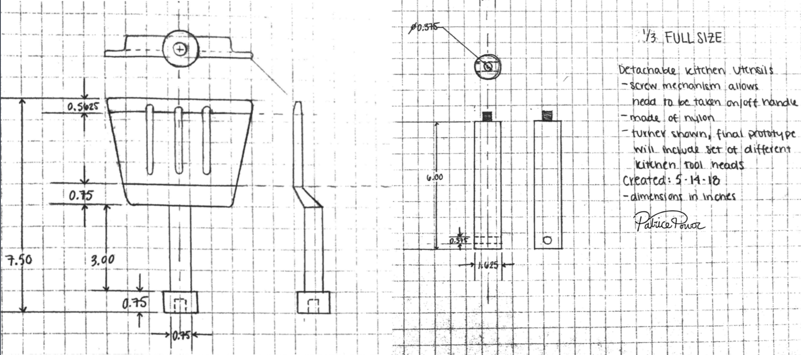

Overview
Click n' Cook is a lightweight, travel-safe, interchangeable cooking utensil set that gives users the freedom to prepare kosher meals while traveling. Eliminating the hassle and uncertainty of traveling kosher, the Click n’ Cook makes meal preparations a breeze.

The User
In response to the fact that many travel destinations with small Jewish populations have few accommodations for Orthodox Jewish travelers at restaurants, in hotel kitchenettes, or in apartments, Kashrut observant individuals pack their suitcases with kosher food and kitchenware. Traveling with such heavy baggage is both physically and financially burdensome.
The primary user is an Orthodox Jewish family of four. Because purchasing meals at restaurants is expensive and foreign eateries seldom accommodate for kosher individuals, such families desire convenient tools to help them travel with cookware they can use in foreign kitchens.
The secondary user is the individual traveler who desired to prepare kosher meals while abroad. Although it is less necessary for solo travelers to prepare large meals, these travelers desire select kasherable kitchenware that can be traveled with to each destination.

Requirements
After observing kosher kitchens on the campus of Northwestern University, interviewing observant individuals involved with Jewish organizations on and off campus, and surveying congregants of various synagogues in the Chicagoland area, my team categorized the users’ requirements into four major categories:
- Portability: The product must be lightweight, fit in carry-on luggage with ease, and pass all TSA travel regulations.
- Kitchen safety: All materials used must be kitchen-safe and waterproof. Utensil handle should be comfortable and non-conductive.
- Ease of use: The handle-head joint must be intuitive and should not interefere with use. Utensils should be color coded.
- Adherence to Kashrut Laws: All materials used must be kasherable and nonporous. To allow for kashering of utensil set, all materials must maintain structural and function integrity under boiling water or high heat.
Final Design Features
Our design, the Click n’ Cook, satisfies three key needs of our users: it is lightweight, travel-safe, and kasherable. The design features a color coded universal handle that can attach to various kitchen utensil heads using a magnetic snap-in joint. This universal handle allows for a more compact fit in suitcases while its lightweight kitchen-safe material minimizes added baggage weight without compromising on function.

3D printed head-handle connector

Universal snap fit joint with embedded magnet

Silicone offers comfort and heat-resistance

Color coding for meat-dairy separation

Instructions for Use
1. Line up female and male joints.

2. With pressure applied, joint will snap into place

3. To disconnect, apply outward force on handle and utensil stem.

4. Select new utensil head to interchange.